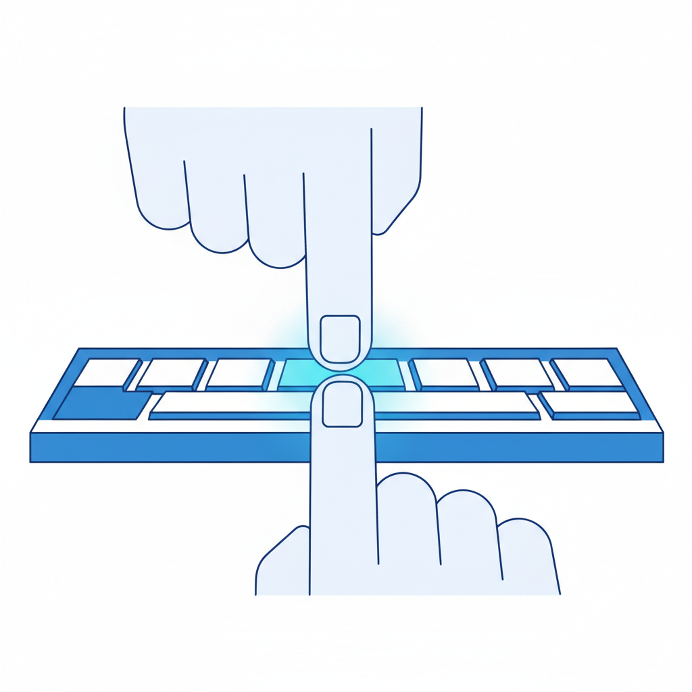
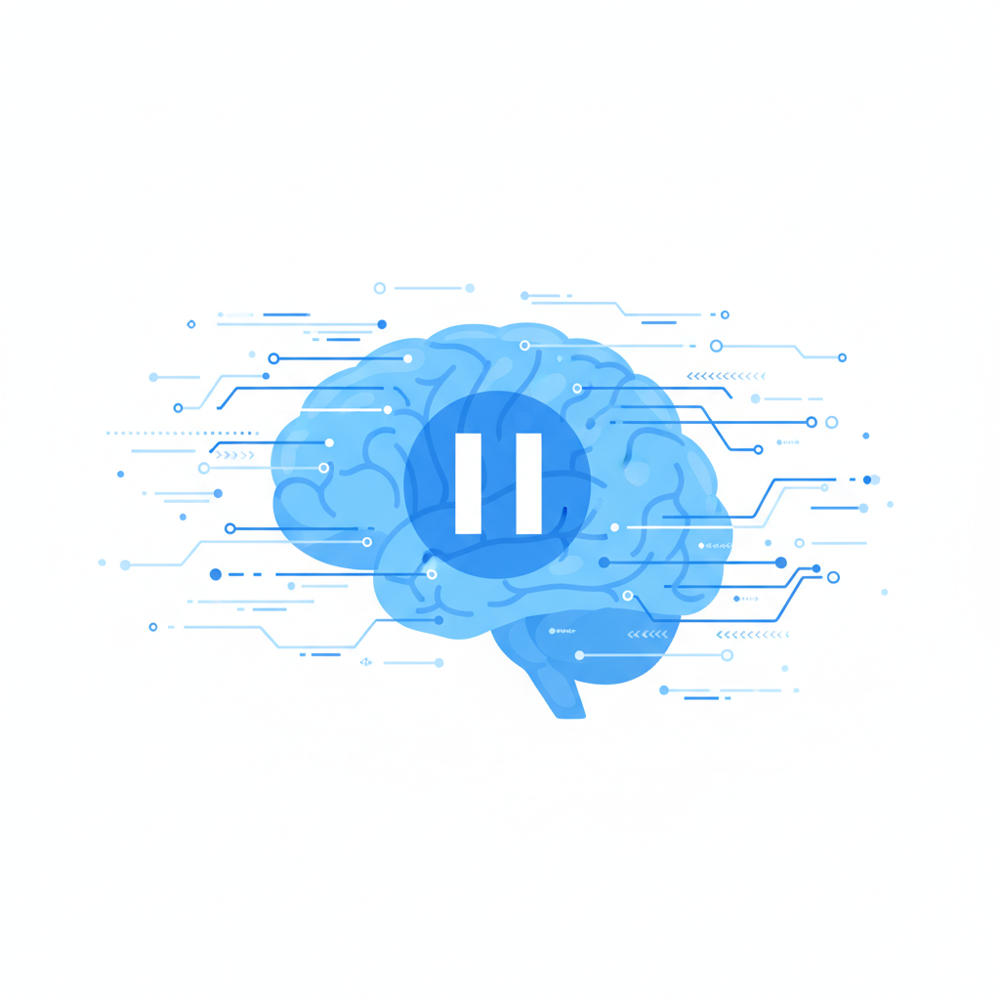
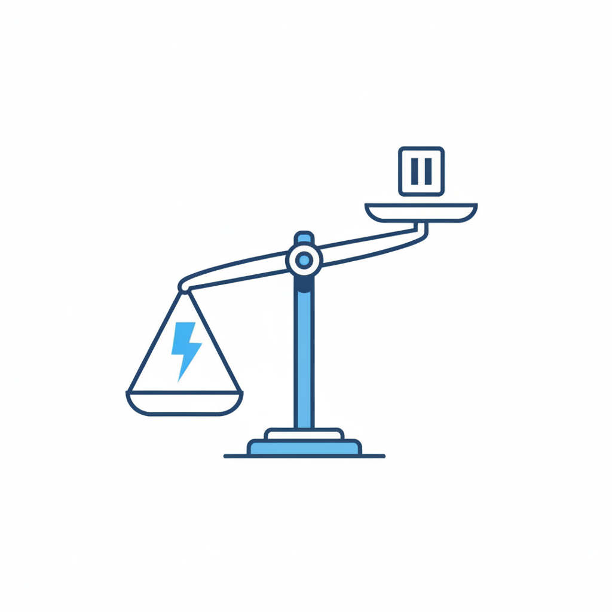

一个动作的考古学
Tab键，在计算机键盘上存在了半个多世纪。它最初的意思是"跳到下一个位置"——制表、缩进、切换焦点。一个纯粹的空间移动指令。
2021年，GitHub Copilot上线。Tab键获得了一层新含义：接受。屏幕上浮出一段灰色的代码建议，你扫一眼，按下Tab，灰色变成白色，成为你的代码。整个过程不到一秒。
根据GitHub官方数据，Copilot的建议接受率在27%到40%之间，且88%被接受的代码会留在最终版本中。这意味着开发者不只是"试着用用"，而是真的在用AI的输出替换自己的思考产物。一个被忽视的细节是：经验较浅的开发者接受率为31.9%，资深开发者为26.2%。经验越少的人，犹豫越少。
我们可以这样来理解这个动作：按下Tab的瞬间，你跳过了什么？
你跳过了"这行代码是不是我想要的"这个问题。你跳过了"还有没有别的写法"这个念头。你跳过了"这里的逻辑对不对"这层检查。这些被跳过的东西，有一个共同的名字——犹豫。
这不是程序员独有的经历。打开邮件客户端，AI已经替你写好了三个回复选项，你选一个点发送。打开文档，AI续写了下一段，你读一遍觉得"差不多"就留下了。打开搜索引擎，AI直接给了你答案摘要，你甚至不再点进任何链接。
2020年发表在Nature Scientific Reports上的一项纵向研究追踪了GPS导航对人类空间认知的影响。结论明确：习惯性使用GPS导航的人，空间记忆能力显著下降。关键在第二个发现——这种退化不是"用GPS时不记路"这么简单，而是迁移到了不用GPS的场景中。也就是说，当你习惯了不需要犹豫"该左转还是右转"之后，你在没有导航的新环境里，也失去了判断方向的能力。
工具替代了行为，行为的缺失重塑了能力。
这正是Tab键正在做的事。每按一次，不是省了几秒钟打字时间，而是少了一次大脑在"接受"和"拒绝"之间做判断的练习。一天300次，一年十万次。

问题在于，GPS只替代了一种能力——空间导航。Tab键替代的，是跨越所有领域的同一种能力：在"接受"之前停下来想一想。
从Tab到Agent——犹豫的系统性消亡
Tab键至少还需要你按一下。
2024年开始，AI Agent成为科技行业最热的概念。Agent的核心承诺是：你不需要逐步确认，告诉我目标，我自己完成。从"你审批每一步"到"你只看最终结果"，中间被省掉的那些步骤，每一步都曾经是一次犹豫的机会。
这不是假设。Strata Identity在2026年的调查发现，近80%部署了AI Agent的组织无法实时追踪这些系统正在做什么。只有28%能把Agent的行为追溯到一个具体的人类负责人。平均而言，一个组织里只有47%的AI Agent处于被监控状态。剩下的53%，在没有人犹豫的情况下，自行运作。
治理跟不上部署的速度。Inkog Labs扫描了500多个开源AI Agent项目后发现，平均治理评分为46分（满分100）。大量项目的得分低于20——功能完整的代码，零治理基础设施。这不是技术不成熟，是没有人觉得需要一个"犹豫"的环节。
后果已经可以量化。佐治亚理工学院的Vibe Security Radar项目追踪AI编码工具直接引入的安全漏洞。2025年下半年，他们记录了约18个案例。2026年前三个月，这个数字跳到了56个。仅2026年3月就有35个——超过2025年全年总和。独立研究显示，AI生成的代码比人类代码多出75%的逻辑错误和57%的安全缺陷。漏洞激增的原因，不是AI写代码写得更差了，而是人类检查代码检查得更少了。
有人会说这是老调重弹——计算器出来时也有人担心算术，拼写检查出来时也有人担心拼写，结果人类适应得很好。这个论证有说服力，但有一个盲区：计算器替代的是窄域技能，你不需要心算36×47，不影响你理解数学。但GPS替代的是空间认知这种基础能力，而且退化可迁移。AI自动补全替代的东西比GPS更底层——不是某个领域的技能，而是在所有领域都起作用的"暂停-评估-决定"过程。
当一个工具替代的是你做判断之前那一秒的停顿，它替代的就不再是某项技能，而是你使用所有技能的方式。
犹豫不是bug
在效率主导的叙事里，犹豫是一种缺陷。它是拖延，是优柔寡断，是需要被优化掉的摩擦。AI产品经理的OKR里写的就是这个意思——建议接受率越高，产品越好。
但犹豫到底是什么？
从认知科学的角度看，犹豫是大脑在做一件极其复杂的事：它在用有限的信息评估多种可能性，在"现有选项"和"也许还有更好的选项"之间权衡，在"立刻行动"和"再想想"之间做取舍。犹豫不是思考的缺失，恰恰相反，它是思考正在发生的唯一可观测的信号。一个从不犹豫的人，不是果断，是没在想。
微软和卡内基梅隆大学2025年联合发表的一项研究直接量化了这件事：人类越依赖AI工具完成任务，投入批判性思维的程度就越低。这不是一个模糊的趋势判断，而是在受控实验中观测到的行为变化——当AI给了你一个"还不错"的答案，你不再去想它有没有可能是错的。
年龄分布让这个发现更值得注意。SBS瑞士商学院的Michael Gerlich对不同年龄段AI用户做了对比研究。结果显示，17到25岁群体的AI依赖度最高，批判性思维得分最低。更年长的、受教育程度更高的人受影响较小。这意味着影响不是均匀分布的——最年轻的、最深度嵌入AI工作流的人，失去犹豫的速度最快。
AI的核心机制是预测"最可能的下一个词"。它的训练目标就是趋向均值——给出大多数人在大多数情况下会说的话。南加州大学的研究团队发现，使用同一套AI工具的人群，其输出的认知多样性在可测量地收窄。当所有人的邮件都由同一个模型起草，当所有人的代码都由同一个系统补全，"犹豫"消失后留下的不只是效率——还有千篇一律。

这里的逻辑链条其实很清楚。犹豫是思考正在发生的证据。消灭犹豫就是消灭思考发生的空间。而整个AI行业的商业模型，恰好建立在消灭这个空间之上。
谁在卖你的暂停键
如果犹豫如此重要，为什么整个技术体系都在朝着消灭它的方向狂奔？因为犹豫是AI产品的反指标。对AI公司来说，用户每犹豫一次——拒绝一条建议、手动改写一段文字、重新审查一次Agent的决策——都是产品的一次失败。接受率是Copilot的核心指标，任务完成率是Agent的核心指标，响应满意度是聊天助手的核心指标。这些指标的共同方向是：让人类越来越少地停下来。
这不是阴谋论，是激励结构的自然结果。一个AI产品的建议被接受得越快，它的使用数据就越好，融资故事就越有说服力，估值就越高。犹豫在这个体系里没有位置——它既不产生数据，也不贡献收入，甚至不会被记录。在AI公司的仪表盘上，犹豫是一个从未被追踪的指标，因为没有人认为它有价值。
这和GPS的故事一模一样。没有哪家导航公司会追踪"用户今天自己判断了几次方向"这个指标。导航的商业模型就是让你永远不需要判断方向。AI的商业模型就是让你永远不需要犹豫。
问题不在任何一家公司，不在任何一款产品。问题在于：当所有的技术激励都指向"更快地接受"，当所有的产品设计都把犹豫当作需要消除的摩擦，谁来保卫那个停顿的瞬间？
没有人。因为暂停键不赚钱。

回过头看，2020年代真正深远的变化也许不是哪个职业被AI取代了。而是在所有人都没注意的时候，犹豫从日常行为中退场了——不是因为它没用，是因为它太慢。
真正的问题从来不是AI太聪明。是在"快"和"对"之间，我们已经不觉得还需要选。